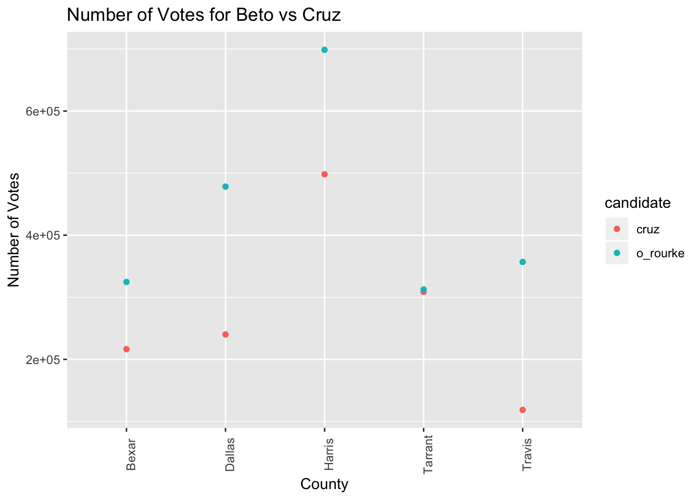
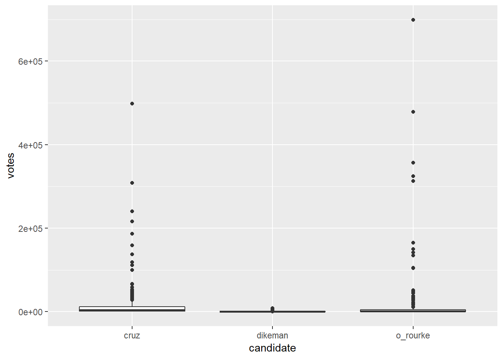

Testing code
Testing code for the final project
To accomplish:
-Looking through the datasets we have available -Need Google Trend data for search terms such as “Cruz” vs “Rourke” or “midterm election” to see if number of searches correlate with # votes for each candidate or # registered voters -What kind of analysis do we want to see -Review the sample final projects
Some links to keep in mind: https://www.cnn.com/election/2018/exit-polls/texas/senate https://www.texastribune.org/2018/10/31/ut-tt-poll-texans-say-immigration-border-security-top-issues/
library(tidyverse)## ── Attaching packages ─────────────────────────────────────────────────────────────── tidyverse 1.2.1 ──## ✔ ggplot2 3.0.0 ✔ purrr 0.2.5
## ✔ tibble 1.4.2 ✔ dplyr 0.7.6
## ✔ tidyr 0.8.1 ✔ stringr 1.3.1
## ✔ readr 1.1.1 ✔ forcats 0.3.0## ── Conflicts ────────────────────────────────────────────────────────────────── tidyverse_conflicts() ──
## ✖ dplyr::filter() masks stats::filter()
## ✖ dplyr::lag() masks stats::lag()library(rvest)## Loading required package: xml2##
## Attaching package: 'rvest'## The following object is masked from 'package:purrr':
##
## pluck## The following object is masked from 'package:readr':
##
## guess_encodinglibrary(httr)
library(ggridges)##
## Attaching package: 'ggridges'## The following object is masked from 'package:ggplot2':
##
## scale_discrete_manualscraping election results from the web
New York Times voting results by county
url = "https://www.nytimes.com/elections/results/texas-senate"
nytimes_data = read_html(url, col_types = "ccdd")
nytimes_data## {xml_document}
## <html lang="en" itemscope="" xmlns:og="http://opengraphprotocol.org/schema/" itemtype="http://schema.org/NewsArticle">
## [1] <head>\n<title>Texas Senate Election Results: Beto O’Rourke vs. Ted ...
## [2] <body class="eln-race-page eln-2018-11-06 eln-forecast">\n<script ty ...nytimes_data %>%
html_nodes(css = "table")## {xml_nodeset (2)}
## [1] <table class="eln-table eln-results-table">\n<thead><tr>\n<th class= ...
## [2] <table class="eln-table eln-county-table">\n<thead><tr>\n<th class=" ...This seems to have created two tables from the website data.
table_overall = (nytimes_data %>% html_nodes(css = "table")) %>%
.[[1]] %>%
html_table()Tidying overall table for exploratory analysis
#remove the commas in the numbers first
table_overall$Votes <- gsub(",","",table_overall$Votes)
table_overall$Pct. <- gsub("%","",table_overall$Pct.)
#convert votes and percent to numeric
table_overall =
table_overall %>%
mutate(Votes = as.numeric(Votes), Pct. = as.numeric(Pct.))Bar Plot of Votes per Candidate
bar_overall =
table_overall %>%
mutate(Candidate = as.factor(Candidate)) %>%
mutate(Candidate = forcats::fct_reorder(Candidate, Votes)) %>%
ggplot(aes(x = Candidate, y = Votes, fill = Party)) +
geom_bar(stat = "identity") +
labs(
title = "Number of Votes per Candidate",
x = "Candidate",
y = "Number of Votes"
) +
scale_x_discrete(labels = c("Cruz* Ted Cruz*" = "Ted Cruz", "O'Rourke Beto O'Rourke" = "Beto O'Rourke",
"Dikeman Neal Dikeman" = "Neal Dikeman"))
bar_overallMade the first table that which we have final results for the state of texas.
table_county = (nytimes_data %>% html_nodes(css = "table")) %>%
.[[2]] %>%
html_table() %>%
slice(1:(n() - 1)) %>%
select(-Rpt.) %>%
janitor::clean_names()Tidying county table
#remove the commas in the numbers first
table_county$cruz <- gsub(",","",table_county$cruz)
table_county$o_rourke <- gsub(",","",table_county$o_rourke)
table_county$dikeman <- gsub(",","",table_county$dikeman)
table_county =
table_county %>%
mutate(cruz = as.numeric(cruz), o_rourke = as.numeric(o_rourke), dikeman = as.numeric(dikeman))
table_county$county = str_replace(table_county$county,"La Vaca", "Lavaca")
table_county$county = str_replace(table_county$county,"De Witt", "DeWitt")
#county names misspelled (was causing issues with merging later on)
table_county_long = gather(table_county, key = candidate, value = votes, cruz:dikeman)Made the second table which has all of the 254 county level data for Texas!
Plots for all counties
point_county =
table_county_long %>%
filter(candidate != "dikeman") %>%
ggplot(aes(x = county, y = votes, color = candidate)) +
geom_point() +
labs(
title = "Number of Votes for Beto vs Cruz",
x = "County",
y = "Number of Votes"
) +
theme(axis.text.x = element_text(angle = 90), text = element_text(size = 3))
point_county
ggplot(table_county_long, aes(x = candidate, y = votes)) + geom_boxplot()
ggplot(table_county_long, aes(x = votes, y = candidate)) +
geom_density_ridges(scale = .85)## Picking joint bandwidth of 1080
comparing these county level election results to highly searched voter election interests in google
-using search terms “Midterms” and selecting dataset from top result
district_searches = read_csv(file = "./data/Search_Data_US_Congressional_District_04Nov2018.csv")## Parsed with column specification:
## cols(
## .default = col_double(),
## District = col_character(),
## Code = col_character(),
## State = col_character(),
## FIRST = col_character(),
## SECOND = col_character(),
## THIRD = col_character(),
## FOURTH = col_character(),
## FIFTH = col_character(),
## SIXTH = col_character(),
## SEVENTH = col_character(),
## EIGHTH = col_character(),
## NINTH = col_character(),
## TENTH = col_character(),
## `Gender workplace diversity` = col_integer(),
## `Maternity leave in the United States` = col_integer(),
## `Single-payer healthcare` = col_integer(),
## `Tax Cuts and Jobs Act of 2017` = col_integer(),
## `Transgender people in the military` = col_integer()
## )## See spec(...) for full column specifications.TX_searches =
district_searches %>% janitor::clean_names() %>%
filter(state == "TX")
TX_counts =
TX_searches %>%
count(fifth)
#select only some variables: immigration, health care, Medicare, Medicaid
#first most searched: immigration, health care, islam, Medicare
#second most searched: health care, immigration, Medicaid, Medicare, Mental Health, Offshore bank
#third most searched: Medicare, Islam, Medicaid, Mental health, Social security, September 11 attacks, Electoral college, Climate change
#4th most searched: Medicaid, Medicare, Abortion...
#5th most searched: Medicaid, Mental health, Abortion, Islam...
#based on this, we should select variables immigration, health care, islam, Medicare, Medicaid, Mental health, and Abortion. The others can be combined as "other"Looking at searches for Texas but for September 26, 2018 (registration ends Oct 9)
-I’m a little confused as to the variables… I assume first means the most searched topic… and so forth for each district
district_searches2 = read_csv(file = "./data/Search_Data_US_Congressional_District_26Sep2018.csv")## Parsed with column specification:
## cols(
## .default = col_double(),
## District = col_character(),
## Code = col_character(),
## State = col_character(),
## FIRST = col_character(),
## SECOND = col_character(),
## THIRD = col_character(),
## FOURTH = col_character(),
## FIFTH = col_character(),
## SIXTH = col_character(),
## SEVENTH = col_character(),
## EIGHTH = col_character(),
## NINTH = col_character(),
## TENTH = col_character(),
## `Maternity leave in the United States` = col_integer(),
## `Single-payer healthcare` = col_integer(),
## `Tax Cuts and Jobs Act of 2017` = col_integer(),
## `Transgender people in the military` = col_integer()
## )## See spec(...) for full column specifications.TX_searches2 =
district_searches2 %>% janitor::clean_names() %>%
filter(state == "TX")
TX_counts2 =
TX_searches2 %>%
count(fifth)
#the topics that were searched most were health care, immigration, mental health, united nations
#second most searched: immigration, health care, Medicare, Medicaid, capital punishment
#third most searched: Medicare, Medicaid, September 11 attacks, immigration,
#fourth most searched: Medicaid, Medicare, Immigration...
#fifth: Medicaid, mental health, Medicare, September 11 attacks...
#Thus, we should focus on the variables health care, immigration, Medicare, Medicaid, Mental health, September 11 attacksuploading county congressional district txt file
congress_district = read.csv(file = "./data/congress_district2.csv")
congress_district$county_name = str_replace(congress_district$county_name,"Sterlin", "Sterling")
congress_district$county_name = str_replace(congress_district$county_name,"MuCulloch","McCulloch")
#misspelled counties discovered while exploring data when merging later onTX_searches2 =
TX_searches2 %>%
separate(code, into = c("remove_1", "district_num"), sep = "-") %>%
mutate(district_num = as.numeric(district_num)) %>%
select(district_num, most_searched = first, everything())
nested_congress =
congress_district %>%
nest(county_name)
merged_searches= merge(TX_searches2, nested_congress, by="district_num", all=TRUE) %>%
unnest()
#rename variable county_name
merged_searches2 = merged_searches %>%
select(district_num, county=county_name, everything())
merged_nyt_searches = merge(merged_searches2, table_county, by= "county", all=TRUE)plot for topics search per county
Still figuring out how to display this ideas: 1) interactive barchart in the current long format, if we use shiny we could show how the top topics vary among counties through use of drop-down menu to select county, etc. 2) figure out we can juxtapose how the counties voted vs. topics. Use of plotly for interactivity? 3) Alternative to first option, how can we show the distribution of topics among counties instead? 4)focus on 5 biggest counties or districts? but this would be biased as it may be a metropolitan area
merged_nyt_searches_long = gather(merged_nyt_searches, key = topics, value = search_interest, health_care:september_11_attacks)